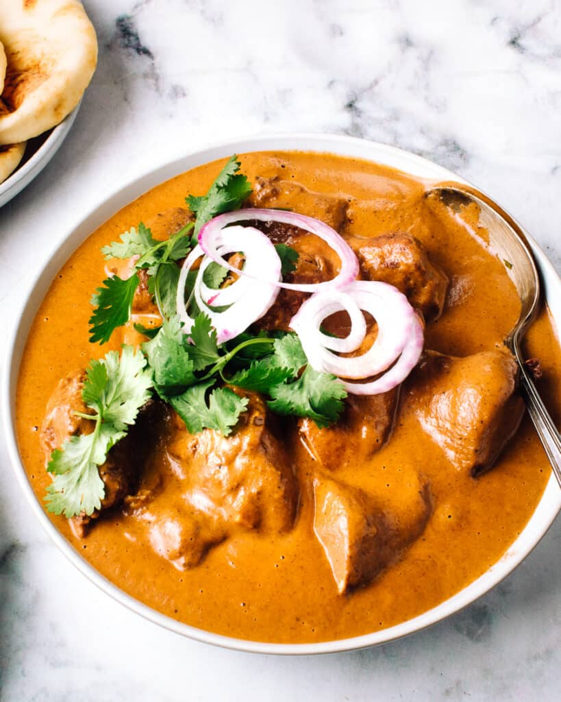

Butter Chicken

Discription
This creamy, best-ever Butter Chicken recipe is impossibly delicious,
with succulent cubes of juicy chicken in the tastiest spiced sauce. My Indian husband says it will change your life!
This Butter Chicken recipe is a cherished family recipe we've perfected over the last 20 years. Here's why you're going to love it too:
Ingredients
- Chicken breast: You could also use boneless, skinless chicken thighs. This is a particul
- Lemon juice: Adds brightness to balance the flavors.
- Garlic
- Lemon Juice
- Vegetable oil: Used for frying the onions, it's a neutral oil that doesn't distract from the spices.
- Onion: Adds sweetness and body to the sauce. Once cooked down, it becomes an imperceptible part of the sauce.
- Heavy cream: Also called whipping cream, double cream, thickened cream or 35% m.f. cream depending where you live. Makes the sauce luxuriously creamy and smooth.
Steps
- Start by prepping your chicken to ensure it absorbs all the wonderful flavors.
- Heat the vegetable oil. To the onions, add coarsely chopped garlic and cook for about 1 minute until its fragrant.
- Blending the sauce helps achieve a smooth, creamy texture that's perfect for scooping up with naan.
- Now, it's time to combine everything and finish cooking.
- Adding the final ingredients right before serving keeps the flavors fresh and vibrant.